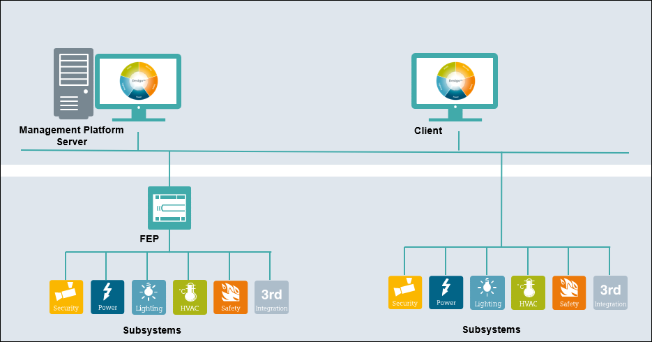

Client/Server
This is the configuration choice for the cases where multiple Installed Clients, connected via a dedicated or shared local area network (LAN) are required and the web connectivity is not required. Communication between the Server and clients can be secured by standard IT security mechanisms such as certificates.

You can set up the Desigo CC Server to work with one or more clients (as Client/FEP) running on separate computers. This allows multiple operators to manage and supervise the same site.
Typically FEP can be used to better balance the communication load or to better adapt to the distribution of the field systems. A typical case for FEP usage would be a system with multiple remote sites and one central control location.
The size of the field system and the number of clients that can be supported by this configuration depend on the server hardware configuration.
The database can be hosted on the same computer as the Server or a remote system (remote database server).
The communication should be secured using the security certificates.